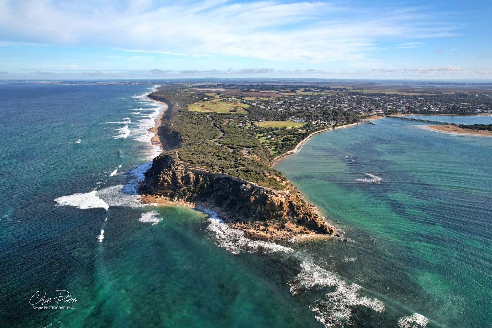

On the map
Barwon Heads sits on the Bellarine Peninsula near Geelong — the western bookend of the bellwest region.
Bellarine Peninsula
A bird's-eye view of the iconic bridge, river mouth, and lagoon country on a moody May day — adapted from the original story on coota.au.

Barwon Heads sits on the Bellarine Peninsula near Geelong — the western bookend of the bellwest region.
Explore the same coastline in an immersive aerial panorama.
Barwon Heads is a charming coastal township on the Bellarine Peninsula near Geelong — a river mouth, sprawling farmland, golf courses, and the saline wetland of Murtnaghurt Lagoon. Nothing captures the place quite like its iconic Barwon Heads Bridge, the lifeline that connects communities along the coast.
On this Saturday in late May, storm clouds that had been hovering over the township began to retreat east. A subtle breeze barely tousled the water below. Under the lingering threat of the storm, every frame felt like a still from an art film — the clouds a formidable backdrop to the landscape opening beneath them.
From above, the Barwon River coils like a snake around patches of vibrant green farmland and manicured fairways as it feeds into Lake Connewarre. Murtnaghurt Lagoon appears in the frame — a reminder of the diverse ecosystems packed into this relatively small corner of the coast.
The bridge itself looks minuscule yet vital from the air: a thin artery dwarfed by the scale of the country around it. Human constructs feel small against the grandeur of the estuary, the paddocks, and the sky.
bellwest sits at the intersection of the Bellarine (Geelong, Barwon Heads, Queenscliff) and the South West (Surf Coast, Torquay, Bells Beach, Great Ocean Road). Barwon Heads is the perfect western anchor for a brand telling that story — coast, river, farmland, and village life in one frame.
Experience the 360° aerial view Read the original on coota.au